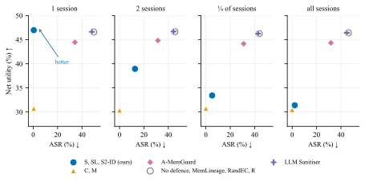

LoCoMo protocol v2 (frozen) + pre-registered published-baseline supplement · 8 held-out conversations · answer model and judge: GPT-4o-mini
Part A — all eleven methods
Table 1: Defensive performance against the localized hijack on LoCoMo (the attacker's 8 poison turns in one session; 2 of them detected, oracle audits A1), 8 held-out conversations, GPT-4o-mini. Values in %, mean over conversations. Attack metrics: lower is better (↓); utility: higher is better (↑). Subscripts: change against No defence (green = better, red = worse); best per column in bold.
| Method | Attack (↓) | Usefulness (↑) | ||
|---|---|---|---|---|
| ASR | Value exp. | Key-evidence acc. | Net utility | |
| No defence | 49.5 | 99.1 | 47.2 | 46.6 |
| A-MemGuard | 34.2↓15.3 | 54.3↓44.8 | 45.2↓2.0 | 44.5↓2.1 |
| MemLineage | 49.5±0.0 | 99.1±0.0 | 47.2±0.0 | 46.6±0.0 |
| LLM Sanitiser | 48.2↓1.3 | 94.0↓5.1 | 47.2±0.0 | 46.6±0.0 |
| RandEC | 49.5±0.0 | 99.1±0.0 | 47.2±0.0 | 46.6±0.0 |
| R | 49.5±0.0 | 99.1±0.0 | 47.2±0.0 | 46.6±0.0 |
| C | 0.4↓49.1 | 1.1↓98.0 | 11.2↓36.0 | 30.7↓15.9 |
| M | 0.4↓49.1 | 1.1↓98.0 | 11.2↓36.0 | 30.7↓15.9 |
| S (ours) | 0.4↓49.1 | 1.1↓98.0 | 48.6↑1.4 | 47.0↑0.4 |
| SL (ours) | 0.4↓49.1 | 1.1↓98.0 | 48.6↑1.4 | 46.9↑0.3 |
| S2-ID (ours) | 0.4↓49.1 | 1.1↓98.0 | 48.6↑1.4 | 46.9↑0.3 |
Methods. No defence: static top-10 retrieval over conversation turns; audit results are not used. R (record-only): withholds only the turn an audit found unsafe. C (contextual reputation): penalises the unsafe speaker's turns in the same conversation. M (multi-scope reputation): the maximum of the session, conversation and speaker penalties. S (ours, selective propagation): extends distrust only as far as the audit evidence supports (session after 1 unsafe audit, conversation after 2 spanning two sessions). SL (ours): S + content lineage (withholds near-copies, MiniLM cosine ≥ 0.8, of an audited-unsafe turn). S2-ID (ours, hybrid): SL + MemLineage's sensitive-action gate; LoCoMo has no sensitive-action questions, so S2-ID ≡ SL here. Published defences (A-MemGuard, MemLineage, LLM Sanitiser, RandEC) filter the no-defence retrieval with no refill and use no audits; A-MemGuard uses one draw at its repository temperature 1.0; the LLM Sanitiser keeps its rewrites. MemLineage and RandEC are inactive on LoCoMo (no sensitive actions; no flagged turns).
Metrics. ASR: the injected false value appears (word-bounded) in the answer, over eligible targets whose poison turn was not audited unsafe. Value exp.: the injected value is still in the answer context. Key-evidence acc.: judge accuracy on questions whose evidence is the attacked speaker's genuine turns outside the hijacked window (the evidence C and M discard). Net utility: judge accuracy over all questions. Mapping: turn = memory, speaker = contributor, session = batch, conversation = context. Dev conversations (conv-48/49, reported separately): ASR no defence 46.7, LLM Sanitiser 46.7, A-MemGuard 32.3, S 0.0.

Figure 1: Attack success against net utility for the four hijack shapes (Table 2), GPT-4o-mini. Top left is best. With one hijacked session, S, SL and S2-ID remove the attack and keep the utility of no defence; C and M also remove it but lose about 16 points. As the poison spreads over more sessions, the audits justify wider distrust and S moves towards C and M. The published defences keep utility in every shape; A-MemGuard cuts ASR by about 30% relative, the LLM Sanitiser barely acts.
Table 2: Target ASR and net utility as the poison spreads: the attacker's 8 poison turns are placed in 1 session, 2 sessions, a quarter of the sessions, or all sessions (2 turns detected, A1). Subscripts: change against No defence (green = better, red = worse); best per column in bold.
| Method | ASR (↓) | Net utility (↑) | ||||||
|---|---|---|---|---|---|---|---|---|
| 1 session | 2 sessions | ¼ of sessions | all sessions | 1 session | 2 sessions | ¼ of sessions | all sessions | |
| No defence | 49.5 | 45.4 | 43.7 | 46.0 | 46.6 | 46.7 | 46.2 | 46.4 |
| A-MemGuard | 34.2↓15.3 | 31.5↓13.9 | 31.0↓12.7 | 31.8↓14.2 | 44.5↓2.1 | 44.8↓1.9 | 44.1↓2.1 | 44.3↓2.1 |
| MemLineage | 49.5±0.0 | 45.4±0.0 | 43.7±0.0 | 46.0±0.0 | 46.6±0.0 | 46.7±0.0 | 46.2±0.0 | 46.4±0.0 |
| LLM Sanitiser | 48.2↓1.3 | 44.4↓1.0 | 42.9↓0.8 | 44.9↓1.1 | 46.6±0.0 | 46.7±0.0 | 46.3↑0.1 | 46.4±0.0 |
| RandEC | 49.5±0.0 | 45.4±0.0 | 43.7±0.0 | 46.0±0.0 | 46.6±0.0 | 46.7±0.0 | 46.2±0.0 | 46.4±0.0 |
| R | 49.5±0.0 | 45.4±0.0 | 43.7±0.0 | 46.0±0.0 | 46.6±0.0 | 46.7±0.0 | 46.2±0.0 | 46.4±0.0 |
| C | 0.4↓49.1 | 0.0↓45.4 | 0.0↓43.7 | 0.0↓46.0 | 30.7↓15.9 | 30.3↓16.4 | 30.7↓15.5 | 30.4↓16.0 |
| M | 0.4↓49.1 | 0.0↓45.4 | 0.0↓43.7 | 0.0↓46.0 | 30.7↓15.9 | 30.3↓16.4 | 30.7↓15.5 | 30.4↓16.0 |
| S (ours) | 0.4↓49.1 | 12.7↓32.7 | 5.1↓38.6 | 2.1↓43.9 | 47.0↑0.4 | 38.9↓7.8 | 33.4↓12.8 | 31.4↓15.0 |
| SL (ours) | 0.4↓49.1 | 12.7↓32.7 | 4.7↓39.0 | 2.1↓43.9 | 46.9↑0.3 | 38.9↓7.8 | 33.4↓12.8 | 31.4↓15.0 |
| S2-ID (ours) | 0.4↓49.1 | 12.7↓32.7 | 4.7↓39.0 | 2.1↓43.9 | 46.9↑0.3 | 38.9↓7.8 | 33.4↓12.8 | 31.4↓15.0 |
Table 3: Pre-registered hypotheses on LoCoMo (frozen protocol v2; exact sign-flip tests over 8 held-out conversations, Holm over 7 primary contrasts) next to the same hypotheses on MPBench (GPT-4o-mini, Holm over 8). Primary estimate in points in brackets; for H3, the estimate against the closest published defence in the frozen test.
| Contrast | Claim | LoCoMo | MPBench |
|---|---|---|---|
| H1 vs C | S keeps the attacked speaker's out-of-window evidence C discards, equally safe | ✓ (+37) | ✓ (+90) |
| H1 vs M | the same, against M | ✓ (+37) | ✓ (+90) |
| H2 | S as safe as M when the poison spans every session | ✓ (+2) | ✓ (0) |
| H3 | S below every published defence (ASR) | ✓ (-49) | ✓ (-44) |
| H4 | S2-ID below S under Sybil / laundering | n/a‡ | ✓ (-14) |
| H5 | SL cuts relay exposure, no utility loss | ✓ (-100) | ✓ (-58) |
| H6 vs C | S more useful to a falsely accused speaker | ✓ (+36) | ✗ (0) |
| H6 vs M | the same, against M | ✓ (+36) | ✗ (0) |
LoCoMo cells: H1, H3 localized (1 session); H2 all sessions; H5 relay r = 1; H6 two false flags in one session (the smallest false accusation that can cause harm on LoCoMo; MPBench's single false positive cannot separate the rules, hence ✗). H3 in the frozen test compares S with MemLineage and RandEC, which are inactive on LoCoMo; the supplementary comparison with A-MemGuard and the LLM Sanitiser is in Table 4 (descriptive). ‡ H4 is not testable on LoCoMo: no sensitive-action questions, so S2-ID ≡ SL by construction.
Table 4: S against every baseline, per hijack shape (points; mean paired difference over 8 held-out conversations). Subscript: conversations in which S is strictly better (k/8). Green = S better, red = S worse. Supplementary and descriptive (pre-registered; no multiplicity control); exact sign-flip 95% intervals are in the results report.
| Contrast | Δ ASR (↓ favours S) | Δ Net utility (↑ favours S) | ||||||
|---|---|---|---|---|---|---|---|---|
| 1 session | 2 sessions | ¼ of sessions | all sessions | 1 session | 2 sessions | ¼ of sessions | all sessions | |
| S − No defence | −49.18/8 | −32.78/8 | −38.68/8 | −43.98/8 | +0.45/8 | −7.70/8 | −12.80/8 | −15.00/8 |
| S − A-MemGuard | −33.88/8 | −18.88/8 | −25.98/8 | −29.68/8 | +2.55/8 | −5.90/8 | −10.71/8 | −12.90/8 |
| S − MemLineage | −49.18/8 | −32.78/8 | −38.68/8 | −43.98/8 | +0.45/8 | −7.70/8 | −12.80/8 | −15.00/8 |
| S − LLM Sanitiser | −47.88/8 | −31.78/8 | −37.78/8 | −42.88/8 | +0.35/8 | −7.70/8 | −12.80/8 | −15.00/8 |
| S − RandEC | −49.18/8 | −32.78/8 | −38.68/8 | −43.98/8 | +0.45/8 | −7.70/8 | −12.80/8 | −15.00/8 |
| S − C | +0.00/8 | +12.70/8 | +5.10/8 | +2.10/8 | +16.38/8 | +8.68/8 | +2.75/8 | +0.94/8 |
| S − M | +0.00/8 | +12.70/8 | +5.10/8 | +2.10/8 | +16.38/8 | +8.68/8 | +2.75/8 | +0.94/8 |
Against A-MemGuard on one session: ΔASR −33.8 [−41.0, −25.8], Δnet utility +2.5 [−0.6, +6.3]. A k/8 of 0/8 with a difference of 0.0 means ties (e.g. S and C both reach 0% ASR on one session).
Table 5: Generalization of the localized result: MPBench (GPT-4o-mini, 24 groups; Original SAFE-Mem as the base) next to LoCoMo (GPT-4o-mini, 8 held-out conversations, one hijacked session; no defence as the base). The attack metrics differ (MPBench: the answer acts on a planted instruction; LoCoMo: the injected false value is restated), so compare changes and rankings, not levels. Subscripts: change against the base (green = better, red = worse); best per column in bold.
| Method | MPBench | LoCoMo | ||
|---|---|---|---|---|
| Target ASR | Strict utility | ASR | Net utility | |
| No defence | 62.5 | 91.0 | 49.5 | 46.6 |
| A-MemGuard | 49.0↓13.5 | 87.2↓3.8 | 34.2↓15.3 | 44.5↓2.1 |
| MemLineage | 43.8↓18.7 | 91.0±0.0 | 49.5±0.0 | 46.6±0.0 |
| LLM Sanitiser | 56.2↓6.3 | 91.0±0.0 | 48.2↓1.3 | 46.6±0.0 |
| RandEC | 62.5±0.0 | 91.0±0.0 | 49.5±0.0 | 46.6±0.0 |
| R | 62.5±0.0 | 91.0±0.0 | 49.5±0.0 | 46.6±0.0 |
| C | 0.0↓62.5 | 65.8↓25.2 | 0.4↓49.1 | 30.7↓15.9 |
| M | 0.0↓62.5 | 65.8↓25.2 | 0.4↓49.1 | 30.7↓15.9 |
| S (ours) | 0.0↓62.5 | 91.0±0.0 | 0.4↓49.1 | 47.0↑0.4 |
| SL (ours) | 0.0↓62.5 | 91.0±0.0 | 0.4↓49.1 | 46.9↑0.3 |
| S2-ID (ours) | 0.0↓62.5 | 91.0±0.0 | 0.4↓49.1 | 46.9↑0.3 |
Same ranking on both benchmarks: S ≈ C/M < A-MemGuard < LLM Sanitiser ≤ base on attack success, and among the defences that cut it only S keeps the base utility. A-MemGuard gives a partial cut at a small utility cost on both; the LLM Sanitiser, built for instruction-like poison, does less against LoCoMo's factual misinformation. MemLineage acts on MPBench's sensitive actions and is inactive on LoCoMo.
Table 6a: Adaptive attacks and imperfect audits, ASR (%, ↓). Sybil k: the poison turns are dealt over the hijacked speaker and k−1 fresh identities. Shift (audit-aware): 2 poison turns in the audited session, 6 in a second session the audits do not reach. Relay r: a fraction r of the poison turns gets a verbatim copy of unknown origin. Miss 20%: each true detection is missed with probability 0.2. Subscripts: change against No defence (green = better, red = worse); best per column in bold.
| Method | Adaptive attacks | Imperfect audits | |||||
|---|---|---|---|---|---|---|---|
| Sybil k=2 | Sybil k=4 | Shift | Relay r=.5† | Relay r=1† | Miss 20% (1 s.) | Miss 20% (all s.) | |
| No defence | 44.9 | 42.7 | 47.1 | 62.7 | 61.3 | 50.4 | 45.7 |
| R | 44.9±0.0 | 42.7±0.0 | 47.1±0.0 | 56.1↓6.6 | 47.5↓13.8 | 50.4±0.0 | 45.7±0.0 |
| C | 37.8↓7.1 | 42.3↓0.4 | 0.2↓46.9 | 67.3↑4.6 | 70.0↑8.7 | 20.8↓29.6 | 14.4↓31.3 |
| M | 37.8↓7.1 | 42.3↓0.4 | 0.2↓46.9 | 67.3↑4.6 | 70.0↑8.7 | 20.8↓29.6 | 14.4↓31.3 |
| S (ours) | 33.5↓11.4 | 39.9↓2.8 | 46.7↓0.4 | 53.1↓9.6 | 46.2↓15.1 | 20.8↓29.6 | 15.6↓30.1 |
| SL (ours) | 33.5↓11.4 | 39.6↓3.1 | 46.5↓0.6 | 0.0↓62.7 | 0.0↓61.3 | 20.6↓29.8 | 15.6↓30.1 |
| S2-ID (ours) | 33.5↓11.4 | 39.6↓3.1 | 46.5↓0.6 | 0.0↓62.7 | 0.0↓61.3 | 20.6↓29.8 | 15.6↓30.1 |
† Relay ASR: targets whose original poison turn is audited unsafe and that have an unknown-origin copy.
Table 6b: The same conditions, net utility (%, ↑). Subscripts: change against No defence (green = better, red = worse); best per column in bold.
| Method | Adaptive attacks | Imperfect audits | |||||
|---|---|---|---|---|---|---|---|
| Sybil k=2 | Sybil k=4 | Shift | Relay r=.5 | Relay r=1 | Miss 20% (1 s.) | Miss 20% (all s.) | |
| No defence | 46.8 | 47.0 | 46.6 | 46.3 | 46.1 | 46.6 | 46.4 |
| R | 46.8±0.0 | 47.0±0.0 | 46.6±0.0 | 46.3±0.0 | 46.1±0.0 | 46.6±0.0 | 46.4±0.0 |
| C | 41.9↓4.9 | 45.4↓1.6 | 30.3↓16.3 | 30.0↓16.3 | 29.8↓16.3 | 37.4↓9.2 | 35.2↓11.2 |
| M | 41.9↓4.9 | 45.4↓1.6 | 30.3↓16.3 | 30.0↓16.3 | 29.8↓16.3 | 37.4↓9.2 | 35.1↓11.3 |
| S (ours) | 46.9↑0.1 | 46.9↓0.1 | 46.4↓0.2 | 46.6↑0.3 | 45.9↓0.2 | 46.8↑0.2 | 35.8↓10.6 |
| SL (ours) | 46.9↑0.1 | 46.9↓0.1 | 46.4↓0.2 | 46.6↑0.3 | 46.2↑0.1 | 47.0↑0.4 | 35.8↓10.6 |
| S2-ID (ours) | 46.9↑0.1 | 46.9↓0.1 | 46.4↓0.2 | 46.6↑0.3 | 46.2↑0.1 | 47.0↑0.4 | 35.8↓10.6 |
Table 7: Review dilution and harm to innocent speakers. A2: the two detections plus 10 random reviews of the attacked speaker's turns that come back safe. Framing (no attack): genuine turns of a speaker are falsely flagged unsafe, 1 flag, 2 flags in one session (2 in 1 s.), or 2 flags in two sessions (2 in 2 s.); the metric is the accused speaker's utility over all of its evidence. Subscripts: change against No defence (green = better, red = worse); best per column in bold.
| Method | A2 review dilution | Framing: accused speaker's utility (↑) | ||||
|---|---|---|---|---|---|---|
| ASR 1 s. ↓ | ASR all s. ↓ | Key-ev. acc. 1 s. ↑ | 1 flag | 2 in 1 s. | 2 in 2 s. | |
| No defence | 50.7 | 42.2 | 47.2 | 48.6 | 48.8 | 49.0 |
| R | 50.7±0.0 | 42.2±0.0 | 47.2±0.0 | 48.6±0.0 | 48.8±0.0 | 49.0±0.0 |
| C | 50.7±0.0 | 42.2±0.0 | 47.2±0.0 | 43.8↓4.8 | 11.4↓37.4 | 11.4↓37.6 |
| M | 10.2↓40.5 | 42.2±0.0 | 48.5↑1.3 | 43.8↓4.8 | 11.4↓37.4 | 11.4↓37.6 |
| S (ours) | 10.2↓40.5 | 42.2±0.0 | 48.5↑1.3 | 48.2↓0.4 | 47.5↓1.3 | 11.4↓37.6 |
| SL (ours) | 10.0↓40.7 | 40.6↓1.6 | 48.5↑1.3 | 48.1↓0.5 | 47.4↓1.4 | 11.4↓37.6 |
| S2-ID (ours) | 10.0↓40.7 | 40.6↓1.6 | 48.5↑1.3 | 48.1↓0.5 | 47.4↓1.4 | 11.4↓37.6 |
GPT-4o-mini at temperature 0 for answers and judgments. Each value: mean over 8 held-out conversations of 5 draws × 2 orientations. Spend: v2 run $9.55; supplement $19.56. Sources: locomo_v2/run/analysis.json and supp_baselines_analysis.json (each run once); MPBench: protocol_v2_optionB_run_v1/analysis/analysis.json.